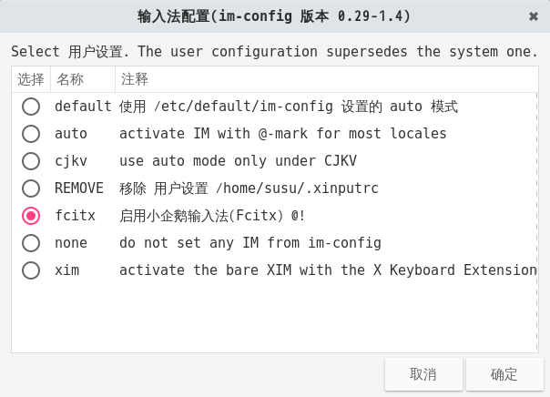
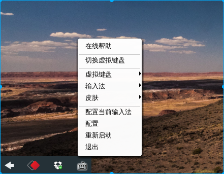

Fcitx
Fcitx (Flexible Input Method Framework) ──即小企鹅输入法，它是一个以 GPL 方式发布的输入法平台(即原来的 G 五笔)，包括五笔、拼音(全拼和双拼)、二笔、区位等输入模块，支持简入繁出，是在 Linux 操作系统中常用的中文输入法。它的优点是，短小精悍、跟程序的兼容性比较好。
安装
打开终端输入下面的命令
sudo apt-get install fcitx fcitx-module-cloudpinyin fcitx-googlepinyin im-config
**注意**:如果需要安装五笔等输入法请将fcitx-googlepinyin 替换为需要的输入法模块,例如fcitx-table-wbpy(五笔打字)等.
然后在终端中输入下面的命令打开输入法配置
im-config
点击OK按钮，再点击Yes按钮，将fcitx设为默认的输入法框架，最后点击OK. 
然后重启系统. 重启成功以后你就会fcitx的小图标出现在任务栏上了.

故障排除
首先诊断问题所在
当你遇到任何 fcitx 有关的问题，比如 ctrl+space 在有的程序中不能工作，首先应该用 fcitx-diagnose 命令诊断问题的原因。 fcitx-diagnose 会列出所有 fcitx 正常运行所需的前提条件，从输出结果中通常可以找到问题的原因。 在网上（比如在 irc 或者论坛里）询问别人关于 fcitx 配置的问题时，也请首先提供你的 fcitx-diagnose 输出结果（比如贴到 pastebin 服务），这将加速别人帮你找到问题所在.
没有ui,导致fcitx不能使用,或使用ctrl+space不能切换
安装fcitx-ui-classic
sudo apt-get istall fcitx-ui-classic
注销当前用户,在Gdm3登录界面点击自己的用户名,有一个设置按钮(图标形式存在),点击他选择Gnome默认.(这是因为你选择了Gnome-wayland,fxitx暂时不支持wayland).
- 卸载所有fcitx相关,重新安装.
执行下面两条命令后移除fcitx软件包后,安装安装所写过程,重新安装.
sudo apt purge fcitx* sudo apt autoremove
fcitx中文乱码,麻将字
请参阅Fonts章节.